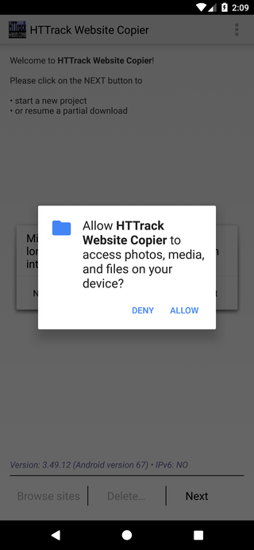
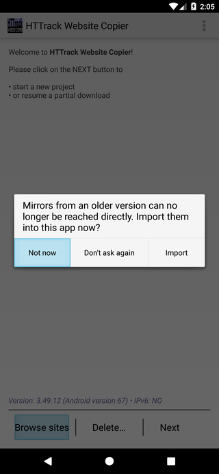
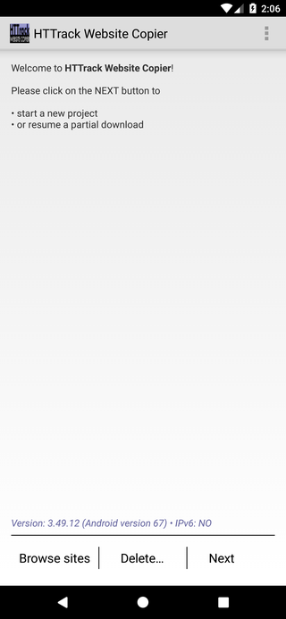
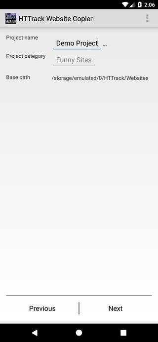
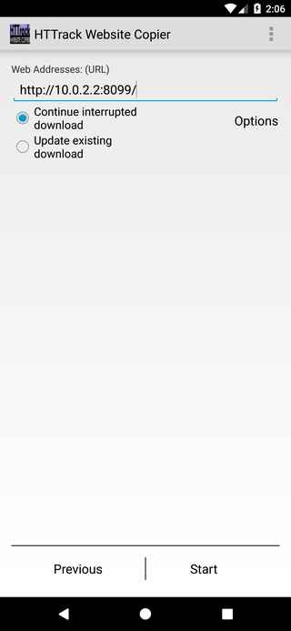
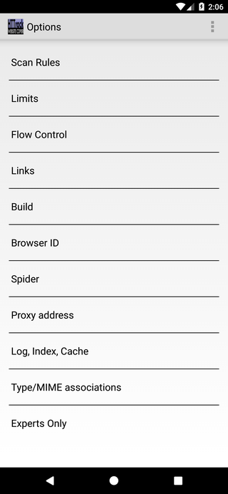
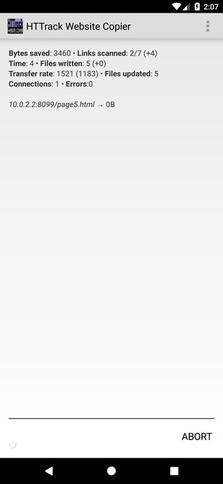
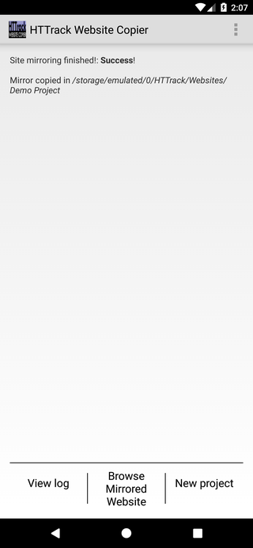

HTTrack on Android
The Android app runs the same mirroring engine as the desktop version behind a
touch interface. It needs Android 7.0 or later, and is available on
Google Play.
The steps below follow one mirror from start to finish. The crawl settings are
the same as on the desktop, so the option screens are only summarized here.
- Grant storage access
On first launch the app asks for permission to store mirrors on your
device. The prompt reads "Allow HTTrack Website Copier to access photos,
media, and files on your device?". Tap ALLOW: without it the app
cannot save the downloaded files.

If you have used an older release, a second prompt offers to bring its
mirrors into the app. Tap Import to move them, or Not now to
skip.

- Start
The welcome screen shows the engine version at the bottom. Tap
Next to create a project, or Browse sites to open a mirror you
already made.

- Name the project
Give the project a name, and optionally a category to group related
mirrors. Base path shows where the files will be written. Tap
Next.

- Enter the address
Type the site address. If a project of the same name already exists,
pick Continue interrupted download or Update existing download.
Tap Options to adjust the crawl, or Start to begin.

- Options (optional)
The Options screen groups the crawl settings across eleven
tabs, matching the desktop version. See the
option reference for what each one does.

- Run the mirror
HTTrack downloads the site and reports live figures: bytes saved,
links scanned, transfer rate, and errors. Tap Abort to stop early; a
partial mirror can be resumed later.

- Browse the result
When the crawl finishes the app reports Success and the mirror
location. Tap Browse Mirrored Website to read the copy in your browser,
View log to see what happened, or New project to start
again.

- Where the files are
Mirrors are written under /storage/emulated/0/HTTrack/Websites,
in a folder named after the project. That folder lives in your device's shared
storage, so a file manager or a USB connection can reach it. Opening
index.html there browses a mirror without the app.
Back to Home
|